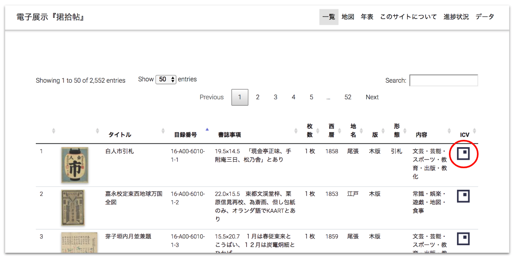
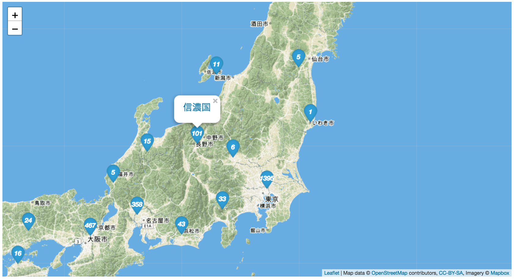

このサイトについて
『捃拾帖』は東京大学総合図書館で所蔵する「田中芳男文庫」のうち、貴重図書にも指定されている資料で、田中芳男が自ら収集した幕末から大正時代にかけてのパンフレットや商品ラベルなどを貼り込んだ膨大なスクラップブックです。
このサイトでは、貼り込まれた資料単位での検索を行うことができます。登録されているデータの詳細、利用可能な機能は次のとおりです。
【貼り込み資料のデータ ※第1帖～第15帖分】
- 東京大学史料編纂所の協力により、「摺物データベース」で公開されているデータ（『捃拾帖』第1帖～第15帖分）を活用・公開しています。
- 一部のデータは、画像へのリンクを形成しています。
- 「摺物データベース」のデータをもとに、東京大学デジタルアーカイブズ構築事業を通じて公開された田中芳男・博物学コレクションの公開画像の部分領域を切り出して作成しています。
- 当該画像の作成にあたっては、人文学オープンデータ共同利用センターが開発したIIIF Curation Platformを利用しています。
- 下図に示すように、IIIF Curation Viewerのアイコンが表示されている内容細目については、アイコンをクリックすることにより、当該画像を閲覧できます。
- 内容細目画像の作成状況については、進捗状況をご確認ください。

地図
- 「摺物データベース」のデータをもとに、地図上に情報をマッピングしています。
- マーカーをクリックし、表示された地名のリンクをクリックすることで、当該地で作成された内容細目のみに絞り込むことができます。
- マッピングにあたっては、大学共同利用機関法人 人間文化研究機構の歴史地名データを活用しています。

年表
略年表の作成には、電気通信大学の佐藤賢一先生が作成された「田中芳男文庫と『捃拾帖』について」及び2018年10月9日に開催されたイベント「田中芳男と『捃拾帖』 幕末・明治を魅せる万華鏡的世界」」で配付された資料をもとに作成をしています。
その他
本システムはGitHub Pagesを利用した静的サイトとして構築しています。サーバを利用しないことにより、運用コストの低減を意図しています。検索対象データはJSONデータとして格納しており、記述形式にはJSON-LDを利用しています。当該データはこちらからダウンロードできます。
本システムがIIIF、オープンデータの活用例の一つとして位置付けられますと幸いです。
お問い合わせ
このサイトについてのご意見・ご質問がありましたら、以下までご連絡ください。
- 東京大学学術資産アーカイブ化推進室（東京大学附属図書館総務課）
- digital-archive [at] lib.u-tokyo.ac.jp